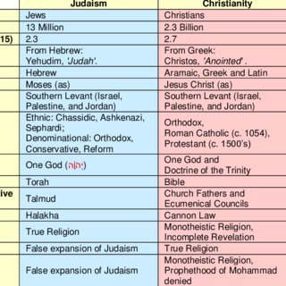
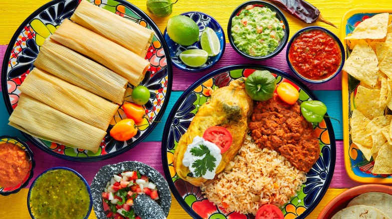
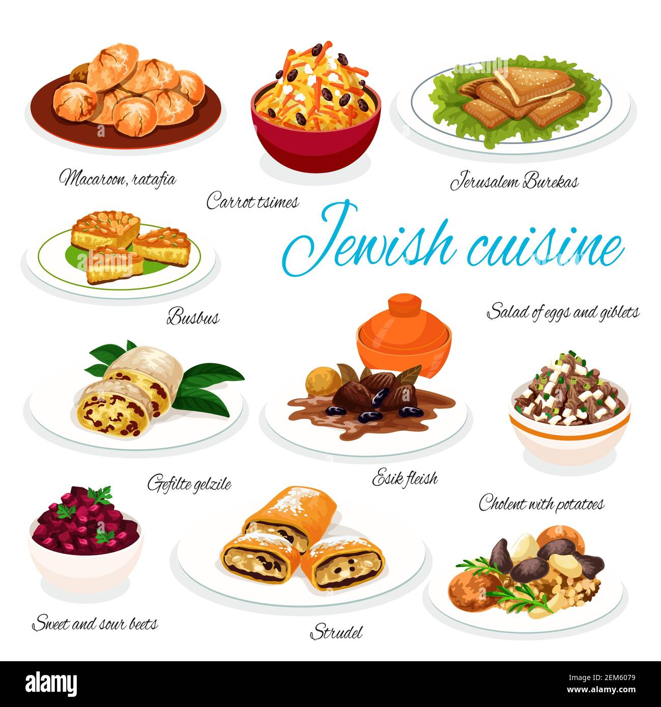

Jewish and Mexican cultures share strong family values, rich culinary traditions, and a love for vibrant music and dance. Both communities prioritize family gatherings and festive celebrations, while their cuisines showcase diverse flavors and heritage. Music plays a central role in cultural expression, with klezmer tunes and mariachi rhythms serving as examples..
Jewish and Mexican cultures share strong family values, rich culinary traditions, and a love for vibrant music and dance. Both communities prioritize family gatherings and festive celebrations, while their cuisines showcase diverse flavors and heritage. Music plays a central role in cultural expression, with klezmer tunes and mariachi rhythms serving as examples..
Additionally, both Jewish and Mexican cuisines are renowned for their rich flavors and heritage. From traditional Jewish dishes like matzo ball soup and gefilte fish to Mexican favorites like tacos and mole sauce, food holds significant cultural importance in both traditions. Culinary traditions serve as a means of preserving cultural identity and passing down heritage from one generation to the next.
 Despite these differences, both Jewish and Mexican religious traditions emphasize the importance of community and collective worship. In Jewish culture, communal prayer, especially during Sabbath services and holidays, fosters a sense of unity and shared identity among worshippers. Similarly, Mexican religious practices often involve communal rituals, such as processions, fiestas patronales (patron saint festivals), and pilgrimages to religious sites, where communities come together to express devotion and solidarity.

Moreover, both Jewish and Mexican religious traditions incorporate symbolic rituals and gestures that deepen spiritual connections. For example, in Judaism, rituals like lighting Shabbat candles or donning tefillin (phylacteries) carry profound symbolic meaning, representing spiritual devotion and connection to tradition. Similarly, in Mexican Catholicism, rituals such as making offerings at altars adorned with candles, flowers, and religious images convey reverence and devotion, enriching believers' spiritual experiences.
Judaism has a rich cultural heritage that spans many aspects of life.